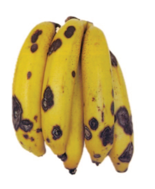

Agriculture for Secondary Schools
(vi)
Anthracnose This is a fungal disease that affects banana. It is caused by
Colletotrichum musae.
Symptoms: Symptoms involve dark, sunken spots on the fruit that may develop
into a soft rot over time. In more severe cases, the disease can also affect the
leaves and pseudostems. The fungus produces pinkish (Figure 2.9). The fruit’s
flesh remains unaffected unless it becomes overripe.
Management: The disease can be managed by removing and destroying
infected plant material, ensuring proper spacing between plants for good air
circulation and practicing crop rotation. Minimising bruising in post-harvest
handling operations and hot water treatment (50ºC for 5 minutes) on fruits are
also recommended.
Figure 2.9: Symptoms of Anthracnose disease in banana fruit and leaf
Vermin management
In some areas especially those close to the forestry large animals (vermin) such
as monkeys and wild pigs can cause significance damage to the banana crop.
The following are some practices that can be employed to manage them:
(i) Ensuring that banana fields are established away from forested areas;
(ii) Implementing controlled hunting;
(iii) Aligning the crop plant in blocks;
(iv) Using a technique of capturing one monkey, and painting with a
striking colour or hanging it with a bell around its neck and release it
to threaten others.
33
Student’s Book Form Two